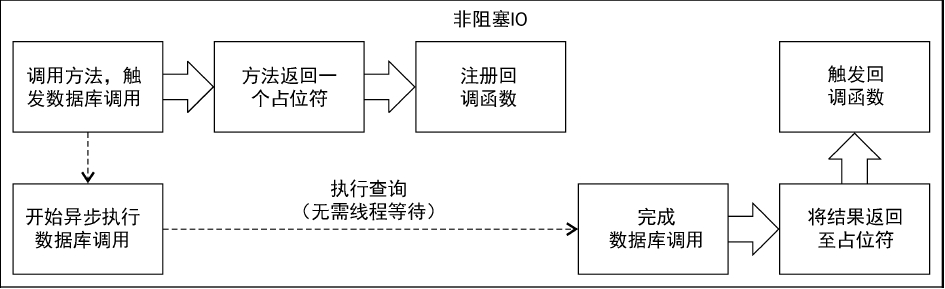
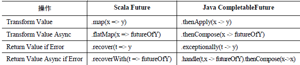
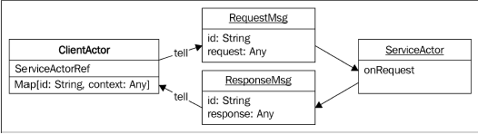

Scala&Akka学习纪要
背景
前一段时间，公司小组内调整，我被安插到一个在线客服的项目下。人不多，就我一个人作为主开发。其主要原因是，项目整体大的需求少数，总体趋于稳定，故而开发很少。
但是，从我接手到目前（2018-8-16），总共也就不到1个半月，前前后后遇到产线事件不下数10起，其中2~3起事件，定位不到问题。
本片发稿日（2018-8-16），白日再次被公司上集领导层点名批评，说这个系统不好用，怎么怎么样。
确实，从我接手看，这个系统很成问题，为什么说很？经常性出问题！
反观自己，确实，对于这套东西本省就很不熟，当初答应接下来，就是因为想挑战挑战。但是从目前看，效果并不明显。
总结开来：遇到这些所谓奇怪的问题，总结开来就是：无从下手排查。导致平凡出现问题后，解决问题的失效，本质性有没有解决问题等等。客户并不满意！
这套在线客服系统，大体用到的技术包含，如下：
- Java
- Scala
- Akka
- SocketIO
- Redis
- Java Web一套
其中，Scala、Akka、Redis在此之前的工作中并没有很好的接触。特别是Scala、Akka根本碰都没碰过，然而在这套系统里面，这俩又是核心骨架。
先从Scala、Akka这两个陌生的东西开始看起！
书籍笔记
Akka入门实战
这本书是翻译的，讲实话，翻译质量不高，当中有不少细节不能接受。比如ActorSystem本来就是Akka框架中一个核心类，非要硬翻译成Actor系统，额。。。这有点未免有点“门外汉”的意思了吧。不过作为入门书籍，基本类介绍的还是非常详细的。英文水平不错的可以直接去阅读英文版书籍吧。
这本书年代还是有点久远，15年，在那前后akka的稳定版还是处在2.3.6版本前后，故而对于2021年的akka版本（2.16.5）来说，可能有部分场景的类，并不能发很好的适配。解释需要参阅官方的API进行调整。
第二章 Actor与并发
书中写的很有意思：如果读者早已熟稔Scala 的Future，Play 的Promise或是Java8的CompletableFuture，那么可以跳过本章。如果曾经使用过Guava 或Spring 的ListenableFuture，可能需要了解本章所介绍API的不同之处。如果从来没有使用过monadic风格的Future，那就需要花点时间学习一下本章了。
对于我来说，还真是一个都不懂。。。
响应式系统设计
源自一个响应式宣言（Reactive Manifesto /ˌmanəˈfestō/，有些地方翻译为反应时宣言，一个意思。），原文在这里the-reactive-manifesto-2.0 ，这里面提到了四个准则：
灵敏性
应用程序应该尽可能快地对请求做出响应。
伸缩性
应用程序应该能够根据不同的工作负载进行伸缩扩展（尤其是通过增加计算资源来\进行扩展）。为了提供伸缩性，系统应该努力消除瓶颈。
容错性
应用程序应该考虑到错误发生的情况，并且从容地对错误情况做出响应。
事件驱动/消息驱动
使用消息而不直接进行方法调用提供了一种帮助我们满足另外3 个响应式准则的方法。消息驱动的系统着重于控制何时、何地以及如何对请求做出响应，允许做出响应的组件进行路由以及负载均。
剖析Actor
书中提到：Java 和Scala 的API 差别很大，因此需要分别介绍。
Java Actor API
先看代码：
1 | public class JavaPongActor extends AbstractActor { |
在这个示例中，有几个关键性的点：
- AbstractActor：首先，我们继承了AbstractActor。这是一个Java 8特有的API，利用了Java 8 的匿名函数（lambda）的特性。与之对应的还有一个
UntypedActor这是一个较为古老的API，其内部需要通过原始的if来判断消息类型。 - Receive：receive方法返回的类型是PartialFunction，这个类来自Scala API。在Java 中，并没有提供任何原生方法来构造Scala 的PartialFunction（并不对所有可能输入进行处理的函数），因此Akka 为我们提供了一个抽象的构造方法类ReceiveBuilder，用于生成PartialFunction 作为返回值。
- ReceiveBuilder：先匹配消息，再通过build()方法生成需要返回的PartialFunction。
- Match：
- match(class, function)：描述了对于任何尚未匹配的该类型的示例，应该如何响应。
match(String.class, s -> {if(s.equals("Ping")) respondToPing(s);}) - match(class, predicate, function)：描述了对于predicate 条件函数为真的某特定类型的消息，应该如何响应。
match(String.class, s -> s.equals("Ping"), s -> respondToPing(s)) - matchEquals(object, function)：描述了对于和传入的第一个参数相等的消息，应该如何响应。
matchEquals("Ping", s -> respondToPing(s)) - matchAny(function)：该函数匹配所有尚未匹配的消息。通常来说，最佳实践是返回错误信息，或者至少将错误信息记录到日志，帮助开发过程中的错误调试。
- match(class, function)：描述了对于任何尚未匹配的该类型的示例，应该如何响应。
- 向sender()返回消息：调用了sender()方法后，我们就可以返回所收到的消息的响应了。响应的对象既可能是一个Actor，也可能是来自于Actor 系统外部的请求。第一种情况相当直接：返回的消息会直接发送到该Actor 的收件信箱中。
- tell()：sender()函数会返回一个ActorRef。在上面的例子中，我们调用了sender().tell()。而tell()是最基本的单向消息传输模式。第一个参数是我们想要发送至对方信箱的消息。第二个参数则是希望对方Actor 看到的发送者。具体描述的是：接收到的消息是String时应该做出的响应。由于需要检查接收到的字符串是否为“Ping”，因此需要进行判断，然后描述响应行为：通过tell()方法向sender()返回一条消息。我们返回的消息是字符串“Pong”。Java 的tell方法要求提供消息发送者的身份：这里使用ActorRef.noSender()表示没有返回地址。
- 返回
akka.actor.Status.Failure：为了向发送方报告错误信息，需要向其发送一条消息。如果Actor 中抛出了异常，就会通知对其进行监督的Actor。不过无论如何，如果想要报告错误消息，需要将错误发送给发送方。如果发送方使用Future 来接收响应，那么返回错误消息会导致Future的结果为失败。Scala Actor API
贴代码：首先写法上，确实要少了不少东西：1
2
3
4
5
6
7class ScalaPongActor extends Actor {
override def receive: Receive = {
case "Ping" => sender() ! "Pong"
case _ =>
sender() ! Status.Failure(new Exception("unknown message"))
}
} - Actor：要定义一个Actor，首先要继承Actor 基类。Actor基类是基本的Scala ActorAPI，非常简单，并且符合Scala语言的特性。
- Receive：在Actor 中重写基类的receive 方法。并且返回一个PartialFunction。要注意的是，receive 方法的返回类型是Receive。Receive 只不过是定义的一种类型，表示
scala.PartialFunction[scala.Any, scala.Unit](注：有关scala中相关 偏函数的介绍，可以参考引用1，更多需要查阅相关专业书籍进行更深入的探索)。如果读者不是非常熟悉ScalaAPI 中的PartialFunction，也不必担心，只需要构造一些模式匹配的case 语句，每个语句都返回Unit，并且知道这些语句并不一定要覆盖所有的可能情况即可。 - 向sender()返回消息：在示例Actor 代码中，我们接着通过sender()方法获取了发送者的ActorRef。我们可以向该ActorRef 发送消息，对发送者做出响应。在这个例子中，返回了“Pong”。
- tell 方法（!）：我们使用tell方法向发送方发送响应消息。在Scala中，通过“！”来调用tell 方法。如果读者看了Java的部分，那么会注意到在Java API 的tell方法中必须指定消息的发送者，不过在Scala中，消息发送者是隐式传入的，因此我们不需要再显式传入消息发送者的引用。在tell 方法“！”的方法签名中，有一个隐式的ActorRef参数。如果在Actor外部调用tell 方法的话，该参数的默认值会设为noSender。下面就是该方法的签名：
def !(message: Any)(implicit sender: ActorRef = Actor.noSender): Unit - Actor 中有一个隐式的变量self，Actor 通过self 得到消息发送者的值。因此Actor中tell 方法的消息发送者永远是self。
Actor的创建
通过使用基于消息的方法，我们可以相当完整地将Actor的实例封装起来。如果只通过消息进行相互通信的话，那么永远都不会需要获取Actor 的实例。我们只需要一种机制来支持向Actor发送消息并接收响应。
在Akka中，这个指向Actor实例的引用叫做ActorRef。ActorRef是一个无类型的引用，将其指向的Actor 封装起来，提供了更高层的抽象，并且给用户提供了一种与Actor进行通信的机制。上文已经介绍过，ActorSystem就是包含所有Actor 的地方。有一点可能相当明显：我们也正是在ActorSystem中创建新的Actor并获取指向Actor的引用。actorOf方法会生成一个新的Actor，并返回指向该Actor的引用。
例如：
在java中：
1 | ActorRef actor = actorSystem.actorOf(Props.create(JavaPongActor.class)); |
在sacala中：
1 | val actor: ActorRef = actorSystem.actorOf(Props(classOf[ScalaPongActor])) |
注意：这里我们实际上并没有新建Actor，例如，我们没有调用 actorOf(new PongActor)。
Props
为了保证能够将Actor 的实例封装起来，不让其被外部直接访问，我们将所有构造函数的参数传给一个Props的实例。Props 允许我们传入Actor 的类型以及一个变长的参数列表。
例如：
1 | Props.create(PongActor.class, arg1, arg2, argn); |
1 | Props(classOf[PongActor], arg1, arg2, argn) |
如果Actor 的构造函数有参数，那么推荐的做法是通过一个工厂方法来创建Props。假如我们不希望Pong Actor 返回“Pong”，而是希望其返回另一条消息，那么可能就会需要这样的构造参数。
1 | public static Props props(String response) { |
1 | object ScalaPongActor { |
然后就可以使用Props 的工厂方法来创建Actor：
1 | ActorRef actor = actorSystem.actorOf(JavaPongActor.props("PongFoo")); |
1 | val actor: ActorRef = actorSystem.actorOf(ScalaPongActor props"PongFoo") |
actorOf创建一个Actor，并返回指向该Actor的引用ActorRef。除此之外，还有另一种方法可以获取指向Actor的引用： actorSelection。
为了理解actorSelection，我们需要先来看一下Actor的路径。每个Actor在创建时都会有一个路径，我们可以通过ActorRef.path 来查看该路径。该路径看上去如下所示：
akka://default/user/BruceWillis
该路径是一个URI，它甚至可以指向使用akka.tcp协议的远程Actor。
akka.tcp://my-sys@remotehost:5678/user/CharlieChaplin
要注意的是，路径的前缀说明使用的协议是akka.tcp，并且指定了远程ActorSystem的主机名和端口号。如果知道Actor的路径，就可以使用actorSelection来获取指向该Actor引用的ActorSelection（无论该Actor 在本地还是远程）。
ActorSelection selection = system.actorSelection(“akka.tcp://actorSystem@host.jason-goodwin.com:5678/user/KeanuReeves”);
Promise、Future和事件驱动的编程模型
阻塞与事件驱动API
要转而使用事件驱动的模型，我们需要在代码中用不同的方法来表示结果。我们需要用一个占位符来表示最终将会返回的结果：Future。然后注册事件完成时应该进行的操作：打印结果。我们注册的代码会在Future占位符的值真正返回可用时被调用执行。“事件驱动”这个术语正是描述了这种方法：在发生某些特定事件时，就执行某些对应的代码。
1 | // java版本 |
1 | // scala版本 |
注意：从线程的角度来看，代码首先会调用方法，然后进入该方法内部，接着几乎立即返回一个Future/CompletableFuture。返回的这个结果只是一个占位符，真正的值在未来某个时刻最终会返回到这个占位符内。
需要理解的是：该方法会立即返回，而数据库调用及结果的生成是在另一个线程上执行的。ExecutionContext 表示了执行这些操作的线程，我们将在本书后面的章节中对此进行介绍。（在Akka 中，可以看到ActorSystem 中有一个dispatcher，就是ExecutionContext 的一种实现。）
方法返回Future之后，我们只得到了一个承诺，表示真正的值最终会返回到Future中。我们并不希望发起调用的线程等待返回结果，而是希望其在真正的结果返回后再执行特定的操作（打印到控制台）。在一个事件驱动的系统中，需要做的就是描述某个事件发生时需要执行的代码。在Actor中，描述接收到某个消息时进行的操作。同样地，在Future中，我们描述Future 的值真正可用时进行的操作。在Java 8中，使用thenRun来注册事件成功完成时需要执行的代码；而在Scala中，使用onComplete。

打印语句并不会运行在进行事件注册的线程上。它会运行在另一个线程上，该线程信息由ExecutionContext 维护。Future 永远是通过Execution Context来创建的，因此我们可以选择在哪里运行Future 中真正需要执行的代码。
在书中提到了，如果你对Java8的Lambda表达式不是很清楚，可以参考oracle官方的教程，来学习一下：Java SE 8: Lambda Quick Start
使用Future进行响应的Actor
Java示例
所有返回Future的异步方法返回的所有返回Future 的异步方法返回的都是Scala的scala.concurrent.Future
创建Actor
首先创建一个ActorSystem，然后通过actorOf在刚创建的Actor系统中创建一个Actor，
1 | ActorSystem system = ActorSystem.create(); |
现在向Actor询问其对于某个消息的响应：
1 | final Future sFuture = ask(actorRef, "Ping", 1000); |
这一做法相当直接，我们调用ask方法，传入以下参数：
- 消息发送至的Actor 引用；
- 想要发送给Actor 的消息；
- Future的超时参数：等待结果多久以后就认为询问失败。
ask会返回一个Scala Future，作为响应的占位符。在Actor的代码中，Actor会向sender()发送回一条消息，这条消息就是在ask 返回的Scala Future中将接收到的响应。
虽然我们无法在Java 8中使用Scala Future，但是可以通过之前导入的库将其转换为CompletableFuture：1
2final CompletionStage<String> cs = toJava(sFuture);
final CompletableFuture<String> jFuture = (CompletableFuture<String>) cs;
首先使用 scala.compat.java8.FutureConverters.toJava 对Scala Future 进行转换，该方法会返回一个CompletionStage。CompletionStage是CompletableFuture 实现的接口，而且这是一个只读的接口。为了调用get 方法，我们将结果的类型转换为CompletableFuture。在测试用例外部，我们并不需要进行该转换。
要注意的是， 我们在Future内存放的数据类型是String，而Actor 是无类型的，会返回Object，因此读者可能会觉得这种无限制的类型转换有问题。当然，在ActorSystem外部与Actor 进行通信的时候需要在这方面多加小心。
Scala示例
理解Future和Promise
Future隐式地处理了两种情况：失败与延迟。要了解如何把阻塞式的IO转为非阻塞式IO，需要学习 一些不同的表示失败处理和延时处理的抽象概念。
Future-在类型中表达失败与延迟
像ask模式这样的异步API会返回一个占位符，类似前面提到的Future类型。
准备一个简单的Java示例：
1 | /** |
Scala示例：
1 | def askPong(message: String): Future[String] = (pongActor ? message).mapTo[String] |
剖析Future
Future[T]/CompletableFuture
成功情况的处理
就像上面的例子中那样，在Java 8中，可以使用thenAccept来操作返回结果。
1 | askPong("Ping").thenAccept(x -> System.out.println("replied with: " + x)); |
而在Scala中，可以使用onSuccess：
1 | (pongActor ? "Ping").onSuccess(){ |
失败情况的处理
失败情况是有可能发生的，而我们也需要去处理这些失败情况。所有的失败情况最终都会由一个Throwable 来表示。和成功的情况类似，有许多方法可以帮助我们来处理失败情况，甚至是从失败中恢复。
在失败情况下执行代码
很多时候，我们都想要在失败情况下做些什么。最基本的就是在失败情况下向日志中打印一些信息。在Scala中，有一种很简单的方法支持这种需求：onFailure。这个方法接受一个部分函数作为参数，而这个部分函数接受一个Throwable。
1 | askPong("causeError").onFailure { |
不幸的是，在Java 8中，没有面向用户的用于失败处理的方法，因此我们在这里引入handle()来处理这种情况：
1 | // 这一点是在异常场景中，需要特别注意的 |
对于这个场景的java代码的说明：
handle 接受一个BiFunction 作为参数，该函数会对成功或失败情况进行转换。handle中的函数在成功情况下会提供结果，在失败情况下则会提供Throwable，因此需要检查Throwable 是否存在（结果和Throwable 中只有一个不是null）。如果Throwable 存在，就向日志输出一条语句。由于我们需要在该函数中返回一个值，而失败情况下又不需要对返回值做任何操作，因此直接返回null。
从失败中恢复
很多时候，在发生错误的时候我们仍然想要使用某个结果值。如果想要从错误中恢复的话，可以对该Future 进行转换，使之包含一个成功的结果值。
在Java中，可以使用exceptionally将Throwable 转换为一个可用的值。
1 | CompletionStage<String> cs = askPong("cause error") |
在Scala中，有一个recover方法提供相同的功能。同样地，recover方法也接受一个PartialFunction 作为参数，所以我们可以对异常的类型进行模式匹配：
1 | val f = askPong("causeError").recover { |
异步地从失败中恢复
我们经常需要在发生错误时使用另一个异步方法来恢复，例如下面是两个用例：
- 重试某个失败的操作。
- 没有命中缓存时，需要调用另一个服务的操作。
例如一则Java示例：
1 | askPong("cause error") |
首先，检查exception是否为null。如果为null，就返回包含结果的Future，否则返回重试的Future。接着，调用thenCompose将CompletionStage[CompletionStage[String]]扁平化。
而在Scala中，我们要调用的函数是recoverWith：类似专门用于错误情况的flatMap。
1 | askPong("causeError").recoverWith({ |
组合Future
在Java 中，可以使用CompletableFuture的thenCombine方法，在Future的值可用时访问到这些值：
1 | askPong("Ping") |
在Scala 中，也可以使用for推导式将多个Future组合起来。我们能够像处理任何其他集合一样，解析出两个Future 的结果并对它们进行处理。（要注意的是，这只不过是flatMap的一个“语法糖”）
1 | // 注：在scala中，这种语法非常灵活 |
处理Future List
注： 这个场景，我真没想到什么情况下会使用，暂时先跳过本小节阅读，记得在scala中有这么一种反转的处理方式
1 | val listOfFutures: List[Future[String]] = List("Pong", "Pong", "failed").map(x => askPong(x)) |
Future速查表
注： 在书中提到的本小节涉及的一些Future操作

第三章 传递消息
了解不同的消息模式，也就是在不同Actor 之间传递消息的不同方法。
消息传递
有4种核心的Actor消息模式：tell、ask、forward 和pipe。我们已经了解过tell和ask，不过sender()都不是Actor。在这里，将从Actor之间发送消息的角度来介绍所有关于消息传递的概念。
- Ask：向Actor发送一条消息，返回一个Future。当Actor 返回响应时，会完成Future。不会向消息发送者的邮箱返回任何消息。
- Tell：向Actor发送一条消息。所有发送至sender()的响应都会返回给发送消息的Actor。
- Forward：将接收到的消息再发送给另一个Actor。所有发送至sender()的响应都会返回给原始消息的发送者。
- Pipe：用于将Future的结果返回给sender()或另一个Actor。如果正在使用Ask或是处理一个Future，那么使用Pipe 可以正确地返回Future 的结果。
Ask消息模式
Ask模式会生成一个Future，表示Actor返回的响应。ActorSystem外部的普通对象与Actor进行通信时经常会使用这种模式。
实际运作模式
在调用ask 向Actor 发起请求时，Akka 实际上会在Actor 系统中创建一个临时Actor。接收请求的Actor 在返回响应时使用的sender()引用就是这个临时Actor。当一个Actor接收到ask 请求发来的消息并返回响应时，这个临时Actor 会使用返回的响应来完成Future。如下图所示：
Ask模式要求定义一个超时参数，如果对方没有在超时参数限定的时间内返回这个ask的响应，那么Future就会返回失败。在Java中可以使用akka.util.Timeout来定义：
1 | static import akka.pattern.Patterns.ask; |
在Scala中，则可以使用scala.concurrent.duration来定义Timeout。Scala的duration领域特定语言（Domain Specific Languages，DSL）很强大，允许用户直接使用1 second这样的方式来定义一段时间。在Scala中，ask 的超时参数是隐式传入的，这样有助于简化ask的语义，并且使得ask语句更为简洁：
1 | import scala.concurrent.duration._ |
Tell
Tell是最简单的消息模式，不过要花上一些时间才能够学会这种模式的最佳实践。这也是为什么我们先介绍ask，再介绍tell的原因。Tell 通常被看做是一种“fire and forget”消息传递机制，无需指定发送者。不过通过一些巧妙的方法，也可以使用tell来完成“request/reply”风格的消息传递。如下图所示：
Tell是ActorRef/ActorSelection 类的一个方法。它也可以接受一个响应地址作为参数，接收消息的Actor 中的sender()其实就是这个响应地址。 在Scala 中，默认情况下，sender会被隐式定义为发送消息的Actor。如果没有sender（如在Actor 外部发起请求），那么响应地址不会默认设置为任何邮箱（叫做DeadLetters）。
使用Tell处理响应
由于在返回消息时可以访问到指向发送者的引用，所以要对某条消息做出响应是很容易的。不过，在处理响应的时候，我们需要知道Actor收到的是哪一条消息的响应。 如果我们在Actor中存储一些状态，记录Actor 希望收到响应的消息，那么就能够高效地向Actor发送请求，解决前面提到的ask模式的问题。
我们可以在Actor中将一些上下文信息存储在一个map中，将map的key 放在消息中一起发送。然后，当有着相同key的消息返回时，就可以恢复上下文，完成消息的处理了。

Forward
Tell在语义上是用于将一条消息发送至另一个Actor，并将响应地址设置为当前的Actor。而Forward 和邮件转发非常类似：初始发送者保持不变，只不过新增了一个收件人。
在使用tell时，我们指定了一个响应地址，或是将响应地址隐式设为发送消息的Actor。而使用forward传递消息时，响应地址就是原始消息的发送者，如下图所示：
有时候我们需要将接受到的消息传递给另一个Actor来处理，而最终的处理结果需要传回给初始发起请求的一方。此时forward是很有用的。
处理过程： 处理中间步骤的Actor转发接收到的消息，或是发送一条新消息，但是仍然会将初始发送者与新消息一起发送。
第四章 Actor的生命周期——处理状态与错误
这一节介绍了几个有意思的点，这些点都是在目前工作中经常会遇到会涉及到，不排除需要着手去处理的场景
- 分布式计算的误区（The Fallacies of Distributed Computing）
- 当Actor 运行失败时会发生什么；
- 如何通过监督Actor 来处理失败；
- 如何利用become()以及有限自动机来修改Actor 的行为。
分布式计算的8个误区
分布式计算误区由Sun Microsystems的一个团队总结出来，包含缺乏经验的开发者对于在网络上通信的系统的一些错误的假设。
具体场景可以参考维基百科上具体细节Fallacies_of_distributed_computing
网络是可靠的（The network is reliable）
我们很容易会用和处理本地系统相同的方式来处理远程系统，也就会像跟本地Actor进行交互一样和远程Actor 进行交互。而Akka在这个错误的假设上更进一步，通过提高网络通信的抽象层次为我们提供了位置透明性。
没有延迟（Latency is zero）
带宽是无限的（Bandwidth is infinite）
在大型的分布式系统中，经常会使用能够在CPU上快速执行的压缩算法，比如Snappy和LZO（例如，Cassandra将LZO 用于节点内部的通信）。如果要将对这一点的考虑实际应用到数据库中，就要通过压缩来减少消息的大小。压缩也是有开销的：它会消耗CPU 资源。有一些专用的算法把重点放在压缩效率，而非压缩比上。我们可以使用其中之一（比如Snappy），在将序列化后的消息发送到远程Actor前先对其进行压缩，接收到消息后先解压缩，再反序列化。
网络是安全的（The network is secure）
网络拓扑不会改变（Topology doesn’t change）
只有一个管理员（There is one administrator）
网络传输没有开销（Transport cost is zero）
网络是同构的（The network is homogeneous）
错误
使用Akka的一个附带的好处就是容错性。（oh，笔者在目前老框架架构下，似乎并没有很好的处理好相应的功能）
隔离错误
先了解一些在分布式应用程序中都应该遵循的通用策略：隔离错误。
假设每个组件都是一个定时炸弹，那么我们希望能够确保无论其中任何一个发生爆炸，都不会引发链式反应，导致其他组件也爆炸。也可以说，我们希望能够隔离错误，或是将可能引发失败情况的组件分离开来。
冗余
保持系统在发生错误时仍能运行的方法之一就是实现各组件的冗余性，确保不存在单点故障。假设我们有一个服务，那么有多种方法可以通过冗余设计来保证服务的高可用性。
监督
Erlang将容错性引入了Actor模型，它使用的概念叫做监督（supervision）。监督的核心思想就是把对于失败的响应和可能引起失败的组件分隔开，并且把可能发生错误的组件通过层级结构来组织，以便管理。
监督的层级结构
Akka使用Actor层级结构来描述监督。当我们创建Actor时，新建的Actor都是作为另一个Actor的子Actor，父Actor负责监督子Actor。Actor的路径结构就展示了它的层级结构，所以和文件系统中的文件夹有点像。
监督策略
- 继续（resume）：Actor继续处理下一条消息
- 停止（stop）：停止Actor，不再做任何操作
- 重启（restart）：新建一个Actor，代替原来的Actor
- 向上反映（escalate）：将异常信息传递给下一个监督者。
定义监督策略
Actor有默认的监督策略。如果没有修改监督策略，那么监督Actor的行为基本上和如下场景：
- Actor 运行过程中抛出异常：restart()；
- Actor 运行过程中发生错误：escalate()；
- Actor 初始化过程中发生异常：stop()。
在默认监督策略中还定义了另一种情况：ActorKilledException。如果Actor 被“杀”（kill）了，那么这个Actor 的监督者会接收到一个ActorKilledException，执行stop()会接收到该异常。
在Java中定义：
1 | // java中通过DeciderBuilder来创建一个Scala的PartialFunction，用于表示策略。 |
在scala中要相对简洁一点：
1 | // 在Scala的例子中，我们还是重写Actor的supervisorStrategy方法，然后定义一个PartialFunction，匹配抛出的异常，并返回Directive |
Actor生命周期
在Actor 的生命周期中会调用几个方法，我们在需要时可以重写这些方法:
- prestart()：在构造函数之后调用。
- postStop()：在重启之前调用。
- preRestart(reason, message)：默认情况下会调用postStop()。
- postRestart()：默认情况下会调用preStart()。
在Actor生命周期中个事件的发生顺序如下图所示：
Actor生命周期调用
注意
要注意的是preRestart和postRestart只在重启的时候才会被调用。它们默认调用了preStart和postStop，但是调用它们的时候就不再直接调用preStart和postStop了。这样我们就能够决定，到底是只在Actor启动或停止的时候调用一次preStart和postStop，还是每次重启一个Actor的时候就调用preStart和postStop。
{kind=link}
重启和停止时的消息处理
我们可以定义监督策略，在抛出异常前重新尝试发送失败的消息，重试次数没有限制。也可以设置时间限制，比如最多重试10 次或1 分钟，只要达到其中任一限制就停止重试：
1 | new OneForOneStrategy(2, Duration.create("1 minute"), PartialFunction) |
终止或kill一个Actor
有多种不同的方法可以用来停止一个Actor。下面任一方法都可以停止Actor：
- 调用ActorSystem.stop(actorRef)；
- 调用ActorContext.stop(actorRef)；
- 给Actor发送一条PoisonPill消息，会在Actor完成消息处理后将其停止；
- 给Actor发送一条kill消息，会导致Actor抛出ActorKilledException异常
生命周期监控和DeathWatch
监督机制描述了如何对子Actor的状态进行响应。而Actor也可以对其他任何Actor进行监督。通过调用context.watch(actorRef)注册后，Actor就能够监控另一个Actor的终止，而调用context.unwatch(actorRef)就可以取消监控注册。如果被监控的Actor停止了，负责监控的Actor就会收到一条Terminated(ActorRef)消息。
安全重启
有时候：有一种情况是：如果Actor已经处在运行中，那么就能够安全地重新启动；但是如果无法完成初始化，我们就必须编写额外的代码实现监督策略，来处理Actor无法在启动时连接到数据库的情况。
很多时候，我们不希望Actor在初始化的过程中发生错误，而是会给Actor发送一条初始化消息，然后在Actor运行的过程中处理状态的变化。可以在preStart()中向Actor自己发送一条Connect消息来达到这一效果：
1 | public void preStart() { |
1 | override def preStart = self ! Connect |
这样一来，Actor 只在运行中才可能会出现错误，而且能够成功重启。所以就可以不断尝试连接数据库直到连上为止了。
有一个很重要的地方需要注意：上面的介绍中还没有涉及到一些细节和问题。首先，我们没有处理Actor 在连接成功之前接收到的消息；其次，如果Actor长时间无法连接的话，邮箱可能会被填满。
状态
我们可以使用几种不同的机制来改变Actor的行为：
- 基于Actor 状态的条件语句；
- 热交换（Hotswap）：become()和unbecome()；
- 有限自动机
在线/离线状态
在状态之间暂存消息（stash）
Actor也经常会处在一个无法处理某些消息的状态。如果数据库客户端离线了，那么在重新上线之前，它都无法处理任何消息。我们可以选择不断重新建立客户端的连接，直到连接成功为止。在这种情况下，在成功连接之前，客户端会丢弃收到的所有消息。另一种做法是把客户端无法处理的消息先放在一旁，等到客户端恢复连接状态之后再做处理。
Akka提供了一种叫做 stash的机制 来支持这一功能。stash 消息会把消息暂存到一个独立的队列中，该队列中存储目前无法处理的消息，例如下面的java伪代码：
1 | if(cantHandleMessage) { |
unstash则把消息从暂存队列中取出，放回邮箱队列中，Actor就能继续处理这些消息了。
1 | changeStateToOnline(); |
注意
虽然stash()和unstash()在希望快速改变状态的时候使用起来非常方便，但是stash消息的状态一定要和某个时间限制进行绑定，否则就有可能填满邮箱。
条件语句
在这个示例中，展示了怎么通过一个条件语句判断的方式，结合stash和unstatsh方法来处理未处理的消息。
java示例：
1 | private Boolean online = false; |
1 | // 相比java代码需要减少很多 |
很多时候，Actor会存储状态，然后根据这个状态值的不同会有不同的行为。使用条件语句是一种非常过程化的用于处理行为和状态的方法。 幸运的是，Akka还提供了一些更好的选择。
热交换（Hotswap）：Become/Unbecome
使用条件语句的代码 并不是很优雅，这种写法显然不是声明式的。Akka 提供了become()和unbecome()，用于管理不同的行为，这一用法可以大大改善代码的可读性。在Actor的context()中，有两个方法：
- become(PartialFunction behavior)：这个方法将receive块中定义的行为修改为一个新的PartialFunction。
- unbecome()：这个方法将Actor的行为修改回默认行为。
前面那个数据库链接的例子优化之后，如下：
1 | public PartialFunction receive() { |
相同功能的scala代码：
1 | def receive = { |
相较于条件语句，这种写法可读性更高。每个状态的行为都定义在自己独立的PartialFunction中。在PartialFunction 中，使用模式匹配来定义不同的行为。这样我们就能够互不影响地阅读Actor中不同状态的行为。
stash泄露
上面使用stash 的例子有一个问题：如果要花很长时间才能接收到Connected消息，或者压根就收不到Connected消息，那么Actor就会不断地stash消息，最终导致应用程序内存耗尽，或者导致邮箱开始丢弃消息（后面的章节中会介绍邮箱）。
我们可以在Actor的构造函数或preStart方法中调度执行这个消息。接收到这个消息之后，就检查Actor是否已经连接。如果还没有连接，那么Actor就可以向上反映问题，由监督者来采取措施：
1 | system.scheduler().scheduleOnce( |
如果Actor接收到消息时已经在线，那么就忽略该消息。如果Actor接收到消息处在离线状态，就会抛出一个异常：
1 | .match(CheckConnected.class, msg ->throw new ConnectTimeoutException()) |
有限自动机（Finite State Machine，FSM）
还有另一个工具可以用来处理Actor 中的状态：有限自动机（Finite State Machine,FSM）。和热交换很相似的是，FSM中也有状态以及基于状态的行为变化。跟热交换比起来，FSM是一个更重量级的抽象概念，需要更多的代码和类型才能够实现并运行。所以通常来说，热交换是一个更简单、可读性更高的选择。
注： 暂时先了解，akka支持比较重的这种控制actor状态的方式。
纵向扩展
使用Dispatcher
Dispatcher解析
Dispatcher将如何执行任务与何时运行任务两者解耦。一般来说，Dispatcher会包含一些线程，这些线程会负责调度并运行任务，比如处理Actor的消息以及线程中的Future事件。Dispatcher是Akka 能够支持响应式编程的关键，是负责完成任务的机制。
Dispatcher负责将工作分配给Actor。除此之外Dispatcher还可以分配资源用于处理Future的回调函数。我们会发现Future API 接受Executor/ExecutionContext作为参数。由于Akka的Dispatcher扩展了这些API，因此Dispatcher具备双重功能。
Executor
ThreadPool Executor有一个工作队列，队列中包含了要分配给各线程的工作。线程空闲时就会从队列中认领工作。由于线程资源的创建和销毁开销很大，而ThreadPool允许线程的重用，所以就可以减少创建和销毁线程的次数，提高效率。
ForkJoinPool Executor使用一种 分治算法，递归地将任务分割成更小的子任务，然后把子任务分配给不同的线程运行。接着再把运行结果组合起来。由于提交的任务不一定都能够被递归地分割成ForkJoinTask，所以ForkJoinPool Executor 有一个工作窃取算法，允许空闲的线程“窃取”分配给另一个线程的工作。由于工作可能无法平均分配并完成，所以工作窃取算法能够更高效地利用硬件资源。
创建Dispatcher
注： 这一小节介绍的东西非常进阶，实际可能有很少实际业务场景会用到，但是从框架层面，会经常看到
有四种类型的Dispatcher可以用于描述如何在Actor之间共享线程：
- Dispatcher：默认的Dispatcher类型。将会使用定义的Executor，在Actor中处理消息。在大多数情况下，这种类型能够提供最好的性能。
- PinnedDispatcher：给每个Actor都分配自己独有的线程。这种类型的Dispatcher为每个Actor都创建一个ThreadPoolExecutor，每个Executor中都包含一个线程。如果希望确保每个Actor都能够立即响应，那么这似乎是个不错的方法。不过PinnedDispatcher比其他共享资源的方法效率更高的情况其实并不多。可以在单个Actor必须处理很多重要工作的时候试试这种类型的Dispatcher，否则的话不推荐使用。
- CallingThreadDispatcher：这个Dispatcher比较特殊，它没有Executor，而是在发起调用的线程上执行工作。这种Dispatcher主要用于测试，特别是调试。由于发起调用的线程负责完成工作，所以清楚地看到栈追踪信息，了解所执行方法的完整上下文。这对于理解异常是非常有用的。每个Actor会获取一个锁，所以每次只有一个线程可以在Actor中执行代码，而如果多个线程向一个Actor发送信息的话，就会导致除了拥有锁的线程之外的所有线程处于等待状态。本书前面介绍过的TestActorRef就是基于CallingThreadDispatcher实现支持在测试中同步执行工作的。
- BalancingDispatcher：我们会在一些Akka文档中看到BalancingDispatcher。现在已经不推荐直接使用BalancingDispatcher了，应该使用前面介绍过的BalancingPoolRouter。不过Akka中仍然使用了BalancingDispatcher，但是只会通过Router间接使用。我们会在“用于解析文章的Dispatcher”小节中介绍BalancingPool的实际用法。BalancingDispatcher有一点很特殊：Pool中的所有Actor都共享同一个邮箱，并且会为Pool中的每个Actor都创建一个线程。使用BalancingDispatcher的Actor从邮箱中拉取消息，所以只要有Actor处于空闲状态，就不会有任何Actor的工作队列中存在任务。这是工作窃取的一个变种，所有Actor都会从一个共享的邮箱中拉取任务。两者在性能上的优点也类似。
决定何时使用哪种Dispatcher
进行纵向扩展的第一步是理解哪 些情况的响应即时性最重要，以及对这些重要的请求做出响应时可 能会发生资源竞争的地方。
可以把用于运行高风险任务的资源和运行重要任务的资源隔离开来。 如果我们新建一些Dispatcher，把运行时间较长或是会阻塞线程的任务都分配给这些Dispatcher，就可以确保应用程序的剩余部分仍然能够保持响应的即时性。我们希望能够把所有需要大量计算、运行时间较长的任务分离到单独的Dispatcher中，确保在糟糕的情况下仍然能够有资源去运行其他任务。
要创建或使用默认Dispatcher/ThreadPool 的话，其实不需要做什么。如果需要的话，只要在classpath内的application.conf文件中定义并配置默认Dispatche 即可。如下所示：
1 | akka { |
我们可以在自己的application.conf文件中定义任意值，覆盖默认配置：
1 | akka { |
默认情况下，Actor完成的所有工作都会在这个Dispatcher中执行。如果需要回去ExecutionContext 并在其中创建Future，那么可以通过ActorSystem访问到默认的线程池，然后将其传递给Future：
1 | ActorSystem system = ActorSystem.create(); |
注意 对于在默认Dispatcher中的Future执行的操作要小心，这些操作会消耗Actor 自身的时间。在下一小节中，我们将介绍如何解决这个问题。
在Scala中，扩展了Actor的类中已经包含了一个implicit val的Dispatcher，所以在Actor中使用Future 的时候就不需要再指定Dispatcher了。 不过在Actor 中使用Future 的情况其实不是很多，要记住相对于ask，应该优先使用tell。所以如果发现有好多在Actor中使用Future 的情况，那么可能需要衡量一下方法是否合理。
使用Future的阻塞IO Dispatcher
第6章 横向扩展——集群化
集群定义
集群就是一组可以互相通信的服务器。集群中的每台服务器成为一个节点或成员。集群可以动态修改大小，并且在发生错误情况时继续运行，把影响降到最低。所以集群需要具备两个功能：失败发现以及使得集群中的所有成员最终能够提供一致的视图。
失败检测
如果集群中的每台服务器都需要和其他所有服务器进行通信，那么集群的性能不会随着节点的增加而线性提高。原因在于每增加一个节点，需要的通信开销都会指数增加。为了降低监控其他节点健康程度的复杂度，Akka中的失败检测只会监控 某个节点附近特定数目的节点。
检测过程
在Akka中，失败检测是通过在节点间发送心跳消息并接收响应来完成的。Akka会根据 心跳的历史记录 以及当前的心跳信息计算出某个节点可用的可能性。Akka会依照这些数据和配置的容错限制得到计算结果，然后将节点标记为可用或不可用。
通过gossip协议达到最终一致性
这种最终把状态传递给整个集群的机制叫做gossip协议或是epidemic协议（因为信息在集群中的传播就像病毒一样！）。许多最终一致性的数据库（比如Riak 和Cassandra）的实现方式都非常类似。在这些数据库中，Amazon发表的关于Dynamo 的论文影响力非常大。
使用Akka Cluster构建系统
创建集群
两个引用包：akka-cluster、akka-contrib（一个非官方扩展工具包），一则默认使用配置：
1 | akka { |
种子节点
点加入集群的方式。当一个新节点加入集群时，该节点会尝试连接第一个种子节点。如果成功连接种子节点，新节点就会发布其地址（主机和端口）。种子节点会负责通过gossip协议将新节点的地址最终通知整个集群。如果连接第一个种子节点失败，新节点就会尝试连接第二个种子节点。只要成功连接任何一个种子节点，那么任何节点加入或离开集群时，我们都不需要对配置进行任何修改。
当部署到生产环境时，应该至少定义两个拥有固定IP的种子节点，并且保证任何时候都至少有一个种子节点可用。当一个节点尝试加入集群时，会试图顺序连接种子节点。如果所有的种子节点都不可用，那么新节点将无法加入到集群。
订阅集群事件
第7章 处理邮箱问题
注： 本章是对于极端场景，Actor邮箱优化的具体实践，暂时不作具体深入了解。
主要内容
- 《Scala编程》
- 《响应式架构 消息模式Actor实现与ScalaAkka应用集成》